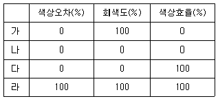
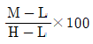
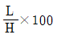
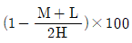
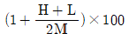
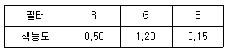
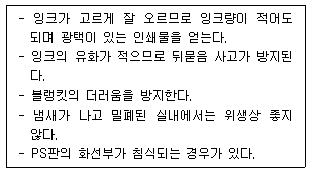

인쇄기사 (2009-07-26 기출문제)
1과목: 인쇄공학
1. 종이의 뒷면에서 측정한 비화선부의 반사계수가 0.2이고, 종이의 뒷면에서 측정한 화선부의 반사계수가 0.4이다. 뒤비침 농도(print 소개호)는 얼마인가?
- log 0.2
- log 0.5
- log 2
- log 5
(정답률: 알수없음)

2. 인쇄가 상에서 잉크 전이에 대한 설명으로 옳은 것은?
- 인쇄속도가 증가하면 전이율은 증가한다.
- 인쇄 압력의 상승에 따라 전이율은 상승한다.
- 피인쇄체 재질과 잉크 전이는 무관하다.
- 인쇄실의 온.습도는 잉크 전이에 영향을 받지않는다.
(정답률: 알수없음)
3. 습수와 공기의 표면장력이 20dyne/cm 이고 인쇄판과 습수의 계면장력이 40dyne/cm이다. 인쇄판과공기의 표면장력(dyne/cm)은 얼마인가? (단, 인쇄판과 습수가 이루는 접촉각은 60° 이다)
- 20
- 30
- 40
- 50
(정답률: 알수없음)
4. 어떤잉크에 전단응력(shear stress)이 40dyne/cm2 걸렸을때 전단속도(shear rate)는 20s-1이 었다. 이 액체의 밀도가 2g/cm3 이라면 동점도는 몇 스토크 (stoke) 인가?
- 0.5
- 1.0
- 1.5
- 2.0
(정답률: 알수없음)
5. 잉크가 롤러 사잉로 전이될 때 잉크 입자가 안개처럼 공기 중으로 비산되어 인쇄기계와 작업 환경을 오염 시키는 미스팅(misting) 현상의 방지책으로적절하지 못한 것은?
- 인쇄 속도가 잉크롤러의 접촉압력을 낮추어 잉크의 유동성을 줄인다.
- 탄성율이 높고 도전성이 좋은 잉크를 사용한다.
- 농도가 낮은 잉크를 사용하여 잉크의 공급량을 늘린다.
- 인쇄기의 냉각장치나 인쇄실의 온도 조절장치의 사용하여 잉크의 온도를 적절하게 유지한다.
(정답률: 알수없음)
6. 양장 제책방식의 둥근등 양식 중 책을 여닫을 때마다 속지의 등과 표지의 등이 동시에 꺾여져서 등의 금박이 떨어지는 것이 결점인 양식은?
- 플렉시블(flexible)백
- 타이트(tight)백
- 홀로(hollow)백
- 퍼펙트(perfect)백
(정답률: 알수없음)
7. 다음 중 안전관리자의 직무로 볼 수 없는 것은? (단, 기타 안전에 관한 사항으로서 노동부장관이 정하는 사항은 제외한다.)
- 당해 사업장 안전교육계획의 수립 및 실시
- 산업재해발생의 원인조사
- 근로자의 건강관리 보건교육및 건강증진지도
- 사업장 순회 점검 지도 및 조치의 건의
(정답률: 알수없음)
8. 일정한 힘을 가하면 스프링은 순간적으로 늘어나게 되지만 병렬로 존재하는 피스톤의 영향을 받아서 서서히 탄성 평형점에 도달하느 모델은?
- Hookean solid
- Newtonian Fluid
- Maxwell Fluid
- Voigt Solid
(정답률: 알수없음)
9. 안전 교육의 내용에 대하여 잘못 설명한 것은?
- 기계 기구의 성능이난 태도교육에 필요한 기초 지식을 주입하는 것은 기능교육이다.
- 안전장치의 관리 및 점검, 검사 등에 관한 요령을 몸에 베이게 하는 교육은 기능교육이다.
- 안전에 대한 지식을 바탕으로 동작의 정확과 습관을 위한 교육은 태도교육이다.
- 안전의식의 향상과 관련 규정 숙지를 위한 교육은 지식 교육이다.
(정답률: 알수없음)
10. 표면 가공에서 비닐 도포(vinyl coating)에 가장 많이 사용하는 것은?
- 셀락니스와 전분
- 염화비닐과 변성페놀수지
- 초산비닐과 PVA, 파라핀 궁중합체
- 염화비닐과 초산비닐 공중합체
(정답률: 알수없음)
11. 매엽 (sheet fed press)에서 뒤묻음이 발생되는 요인으로 볼수 없는 것은?
- 잉크의 set 가 너무 느리다.
- 스프레이 파우더의 양이 너무 적다.
- 종이가 잉크를 잘 흡수한다.
- Delivery에서 용지가 너무 많이 적개되었다.
(정답률: 알수없음)
12. Black → Cyan → Magenta → Yellow 순서로 인쇄할 경우 트래핑을 좋게 하기 위하여 잉크의 택(tackness)이 가장 낮아야 하는 색상은?
- Black
- Cyan
- Magenta
- Yellow
(정답률: 알수없음)
13. Halftone Value 의 증강과 변형에서 필름에서의 도트 크기보다 Halftone Value 값이 감소하는 경향을 나타내는 겻은?
- sharpening
- slur
- Douling
- offsetting
(정답률: 알수없음)
14. 블로킹(blacking) 될 가능성이 가장 높은 인쇄실의 조건은?
- 고온고습
- 고온저습
- 저온고습
- 저온저습
(정답률: 알수없음)
15. 볼록판 민판인쇄시 롤러 상에서 보통 잉크를 사용‘하여 인쇄할 때 전이량을 가장 높일 수 있는 방법은?
- 잉크의 점도를 높인다.
- 인쇄 속도를 높인다.
- 인쇄 압력을 높인다.
- 실내 온도를 낮춘다.
(정답률: 알수없음)
16. Walker-Fetsko 의 잉크 전이 방정식에 사용되는 3가지 개념과 가장 거리가 먼 것은?
- 용지의 피복 면적비
- 고정화 잉크
- 자유 앙크의 분열
- 공극률
(정답률: 알수없음)
17. 인쇄 사고 중 고스트(ghost) 현상에 대한 설명으로 틀린 것은?
- 축임물을 사용하지 않는 평판에서 고스트가 발생한다.
- 잉크 묻임 롤러(form roller)의 진동을 늘이면 줄어든다.
- 축임물 공급을 늘이면 고스트 현상이 줄어든다.
- 롤러 닙폭이 불량이면 발생하기 쉽다.
(정답률: 알수없음)
18. 신문용지와 같은 비도피지에 인쇄를 할 때 이 sson-phil의 식에 의하면 인쇄압력이 4배 증가 할 때 침투깊이는 몇 배 증가하는가?
- 2
- 4
- 8
- 16
(정답률: 알수없음)
19. 민판 인쇄물의 농도가 0.79이고, 망점 인쇄물의 농도가 0.73 일 때 인쇄물의 콘트라스트(%)는 약 얼마인가?
- 0.06
- 1.08
- 7.6
- 92.4
(정답률: 알수없음)
20. 다음 중 w/o(water in oil) 에멀젼(emulsion)에 해당되는 것은?
- 우유
- 버터
- 아이스크림
- 마요네즈
(정답률: 알수없음)
2과목: 인쇄재료학
21. 다음 중 가장 수율이 높은 펄프에 해당되는 것은?
- 아황산펄프(sp)
- 가압쇄목펄프(PGP)
- 알칼리펄프(AP)
- 크리프트펄프(KP)
(정답률: 알수없음)
22. 평량이 80g/m2인 4*6 전지 1연(500매)의 무게는 약 몇 kg인가?
- 22.1
- 24.1
- 33.3
- 34.4
(정답률: 알수없음)
23. 비이클(vehlcle)에 대한 설명으로 틀린 것은?
- 기름ㆍ수지ㆍ용제ㆍ가소제로 구성되어 있다.
- 안료를 피인쇄체에 고착시키는 역할을 한다.
- 인쇄면을 착색시키며 유동 물성에는 영향을 주지 않는다.
- 안료의 분산을 안정화 한다.
(정답률: 알수없음)
24. 계면(계면활성제)에서 친수기는 물쪽으로 친유기 기름쪽으로 늘어서는 것을 무엇이라 하는가?
- 배향
- 표면활성
- 흡착
- 양극분리
(정답률: 알수없음)
25. 장섬유위 화학펄프를 많이 사용할 때 떨어지는 비 도공 용지의 성질은?
- 윤전기의 주행적성
- 상품권의 내절성
- 교과서 용지의 침투 건조성
- 쇼핑백의 민인쇄 적성
(정답률: 알수없음)
26. 인쇄잉크의 피복지향에 대한 설명으로 틀린 것은?
- 인쇄압이 증가함에 따라 피복저항은 증가한다.
- 인쇄속도가 증가함에 따라 피복저항은 증가한다.
- 피복저항이 증가하면 필요한 최저 잉크량이 증가한다.
- 평활도와 피복저항은 직접적인 관계가 있다.
(정답률: 알수없음)
27. 종이 제조(코팅지)시 사용하는 도고용 안료가 아닌 것은?
- 클레이
- 규산
- 이산화티탄
- 탄산칼슘
(정답률: 알수없음)
28. 종이의 제조 공정으로 옳은 것은?
- 고해 → 사이징 → 충전 → 정정 → 초지 → 가공
- 고해 → 충전 → 사이징 → 정선 → 초지 → 가공
- 고해 → 충전 → 사이징 → 초지 → 정선 → 가공
- 고해 → 사이징 → 정선 → 충전 → 가공 → 초지
(정답률: 알수없음)
29. 다음 중 친수성과 소수성의 척도를 측정하는 것 것은?
- HLB값
- 요오드값
- 비누화값
- 산값
(정답률: 알수없음)
30. 다음 중 고무롤러 제조시 사용되지 않는 재료는?
- 연화제
- 계면활성제
- 스테아르산
- 마 그네시아
(정답률: 알수없음)
31. 다음중 종이의 파열강도를 측정하는 시험기는?
- Chopper시험기
- Mollen 시험기
- Hunter-lab 시험기
- Gurley cobb시험기
(정답률: 알수없음)
32. 다음 중 잉크의 전이 현상을 정량적으로 측정하는 방법으로 가장 거리가 먼것은?
- 인쇄 전과 후에 인쇄판의 중량을 측정
- 인쇄 전과 후에 종이의 중량을 측정
- 방사성 원소를 잉크에 넣어 가이거 계수기를 사용하여 측정
- 종이에 전이된 잉크의 점도를 측정
(정답률: 알수없음)
33. 잉크 건조시 산소에 의하여 중합촉진을 하는 대신에 건조장치 내의 열이 비이클이나 수지를 중합(방향족아민류)시키는 것에 의해 건조하는 무용제 잉크는?
- 촉매잉크
- 히트세크잉크
- 퀵세트잉크
- 그라비어잉크
(정답률: 알수없음)
34. 종이의 불투명도, 인쇄적성, 평량을 증가시키기 위해 백토나 탄산칼슘 등을 펄프에 혼합시키는 종이의 제조 공정은?
- 정선
- 사이징
- 충전
- 고해
(정답률: 알수없음)
35. 아민과 알칼리 가용성 수지를 알코올에 용해시킨 비이클을 사용한 잉크로서 주로 플렉소그래피와 그라비어 인쇄에 사용되는 것은?
- 촉매경화잉크
- 도전성잉크
- 자성잉크
- 수성잉크
(정답률: 알수없음)
36. 다음 중 촉매의 활동을 억제하여 건조를 촉진시키는 안료는?
- 카본블랙
- 티탄화이트
- 알루미나
- 황연
(정답률: 알수없음)
37. 다음 중 종이의 열단장 단위로 옳은 것은?
- km
- kpa
- mN
- g
(정답률: 알수없음)
38. 재생펄프의 재생 횟수 증가에 따른 특징으로 틀린 것은?
- 재생횟수에 따라 섬유가 뻣뻣해진다.
- 섬유의 인장강도가 상승한다.
- 섬유의 인열강도가 상승한다.
- 섬유의 파열강도가 떨어진다.
(정답률: 알수없음)
39. 석유계 용제가 많이 사용되는 평판인쇄에서 내유성 고무롤러의 재료로 사용하지 않는 것은?
- 니트릴 고무
- 아라비아 고무
- 클로로프렌 고무
- 우레탄 고무
(정답률: 알수없음)
40. 다음 잉크 중 아마인유의 함량이 가장 많은 잉크는?
- 오프셋 매엽잉크
- 히트세트 윤전잉크
- 유성 그라비아잉킄
- 볼록판 신문잉크
(정답률: 알수없음)
3과목: 특수인쇄학
41. 종이의 뒷면에 전기자응력 주고 4개의 노출 로 잉크를 분산시켜 전기장에 의해서 끌어 낸 잉크를 종이에 부딪치게 하여 화상을 형성하는 방식은?
- 전사 인쇄
- 입체 인쇄
- 정전식모 인쇄
- 잉크제트 인쇄
(정답률: 알수없음)
42. 스크린인쇄에서 직접감광법으로 제판한 판에 수명을 늘리기 위해서 경막 처리를 하는데 이 때 사용하는 약품은?
- 묽은 황산
- 크롬명반
- 수산화나트륨
- PVA
(정답률: 알수없음)
43. 스크린인쇄에서 사용하는 감광유제 중 디아조 감광재료의 최대 파장 영역은?
- 360mm
- 400mm
- 460mm
- 500mm
(정답률: 알수없음)
44. 그라비아 백선 스크린의 망점 형태를 선택할 때 고려되어야 할 사항으로 가장 거리가 먼 것은?
- 모틀링(motting) 방지 여부
- 잉크의 전이력 향상 여부
- 무리한 인쇄압 방지 여부
- 측면 부식에 의한 망점벽 손상 여부
(정답률: 알수없음)
45. 플렉소 인쇄기에 장착된 아닐룩스 롤러(anilox roller)를 셀의 모양에 따라 분류할 때 소량의 잉크 공급에 적합하며, 홈에 비해 둑(제방)의 폭이 좁고 마모가 빠르며 가장 많이 사용되는 형태는?
- 피라미드형
- 구갑형
- 시선형
- 격자형
(정답률: 알수없음)
46. 플레속 인쇄기 중 아닐룩스 롤러에 인자할 때 문자물인 경우 길이의 합이 160 ~ 180선/인치이다. 이때 깊이는 어느 정도가 적당한가?
- 5~10/m
- 10~15/m
- 15~20/m
- 30~40/m
(정답률: 알수없음)
47. 금속인쇄 방식 중 알루미늄판에 인쇄를 하는 경우 도장 및 인쇄 재료로서의 장점이 아닌 것은?
- 표면처리가 비교적 쉽고, 인공착색 처리에 의해 아름다운 채색이 가능하다.
- 표면 반사율이 높고 인쇄효과가 좋다.
- 빛 또는 열전도성 및 반사성이 우수하다,
- 철과 같이 착색된 산화물이 생성된다.
(정답률: 알수없음)
48. 비즈니스 폼 인쇄방식 중에서 특히 5장 이상의 복수폼 용지에서 접는 머신부에 일그러짐이 생기고, 폼 용지를 펼칠 때 머신부에 주로 발생하는 불량은?
- 급지 불량 현상
- 정전기 발생
- 접지 불량 현상
- 텐트(tant)현상
(정답률: 알수없음)
49. 그라비아 인쇄기에서 잉크공급 장치의 종류에 속하지 않는 것은?
- 분사형
- 롤러 전이형
- 침적형
- 인라인형
(정답률: 알수없음)
50. 그라비아 인쇄기에서 플로팅 롤러(floating roller)의 주된 역할은?
- 두루마리 용지의 좌우 불균형 조절
- 용지 끝의 위치가 일정하도록 조정
- 주행 용지의 느슨함이나 겹침 등을 방지
- 용지의 자동 연결
(정답률: 알수없음)
51. 잉크제트 인쇄에서 매트릭스(matrix)에 대항 가장 옳게 설명한 것은?
- 선의 규칙적인 배열을 말하며 1인치 내의 선의 수
- 점의 규칙적인 배열을 말하며 1인치 내의 점의 수
- 가로와 세로로 나열되어 있는 선의 수를 더하여 밀도로 나타낸것
- 가로와 세로로 나열되어 있는 점의 수를 더하여 밀도로 나타낸것
(정답률: 알수없음)
52. 곡면 인쇄에 주로 사용되는 스퀴지의 .형태는?
- 반원형
- 검형
- 평형
- 각형
(정답률: 알수없음)
53. 용제형 그라비아 잉크에서 용제를 처리하는 방법 붕 활성탄 흡착 회수법의 장점이 아닌 것은?
- 저농도 가스에도 처리 가능하다.
- 높은 효율이 얻어진다.
- 전처리가 불필요하다.
- 용제 회수가 가능하다.
(정답률: 알수없음)
54. 다음 중 골판지의 종류에 해당하지 않는 것은?
- 측면 골판지
- 양면 골판지
- 복양면 골판지
- 복복양면골판지
(정답률: 알수없음)
55. 인쇄 회로기판의 제작시 텅스텐이나 몰디브덴의 금속분말을 세라믹 표면 위에 스크린 인쇄 등으로 인쇄된 접착제 위에 고착시키는 방법은?
- 스프레이법
- 화학적 부착법
- 판박이 배선법
- 살분법
(정답률: 알수없음)
56. 물질에 빛이 조사시킬 때 일어나는 광전효과를 외부 광전효과와 내부 광전효과로 나눌 때 내부 광전효과에 대하여 옳게 설명한 것은?
- 물질에 빛이 조사되어 전자와 정공이 쌍을 이루는 현상
- 물질에 빛이 조사되어 광 증폭이 발생되는 현상
- 물질에 빛 에너지가 들어가서 전자와 전자가 쌍을 이루어 광 증폭이 일어나는 현상
- 물질에 빛이 조사되어 광 분해가 일어나는 현상
(정답률: 알수없음)
57. 에칭 페이스트(etching paste)잉크를 유리에 융착시킬대 유리 색은 융착 온도에 따라 고온, 중온, 저온컬러로 분류한다. 이 때 고온칼라의 융착 온도는 몇℃인가?
- 350
- 450
- 550
- 650
(정답률: 알수없음)
58. LCD의 전기광학적 동작에서 편광형에 해당되지 않는 것은?
- 상전이형
- 복굴절형
- TN형
- 전기장 제어
(정답률: 알수없음)
59. 금속 스크린의 제판법 중 이즈 간편하며, 감광액을 미끄러운 니켈박 위에 도포한 후 빛쬠, 현상, 열처리하고 부식하여 화선을 만드는 방법은?
- 갈바노법
- 부식법
- 래커법
- 라인케법
(정답률: 알수없음)
60. 잉크가 접착되기 어려운 유리 등의 재질에 인쇄시 사용되는 첨가제는?
- 커플링제
- 슬리핑제
- 레벨링제
- 소포제
(정답률: 알수없음)
4과목: 인쇄색채학
61. Moon Spencer 의 색채 조화론에서 색상ㆍ명도ㆍ채도에 있어서 조화와 부조화로 나눌 때 조화에 해당하지 않는 것은?
- 공간조화
- 동등조화
- 유사조화
- 대비조화
(정답률: 알수없음)
62. 색온도 값이 3000K이면 약 몇Deca Mired 인가?
- 0.003
- 0.03
- 33
- 333
(정답률: 알수없음)
63. 가장 이상적인 잉크일 경우에 색상오차, 회색도, 색상 효율은?

- 가
- 나
- 다
- 라
(정답률: 알수없음)
64. GATF 표색계에서 색상오차(Hue Error)를 나타낸는 색은? (단, H, M, l은 3가지의 필터에 의해 판정한 농도차 중에서 최대치, 중간치, 최소치를 각각 의미한다.)




(정답률: 알수없음)
65. 미도의 이론식을 M=0/Cx로 나타낼 때 다음 중 옳지 않은 것은?
- 0 는 질서성을 나타내는 요소의 수이다.
- Cx 는 복잡성을 나타낸는 요소의 수이다.
- 간단한 디자인에서 질서성이 있으면 미도가 작다.
- MoonSpencer는 이 식을 배색에 적용하였다.
(정답률: 알수없음)
66. 분광반사울이 같지 않은 2가지 색이라도 어떤 광원 아래에서는 같은 색으로 보이는 현상을 무엇이라고 한는가?
- 표면색
- 면색
- 공간색
- 조건등색
(정답률: 알수없음)
67. 다음 표준광 및 보조 표준광 중 직사 태양광으로 조명되는 물체색을 표시할 필요가 있는 경우에 사용하는 것은?
- 표준광 A
- 보조 표준광 B
- 표준광 C
- 표준광 D65
(정답률: 알수없음)
68. 오스트발트(Ostwald)표색계에 대한 설명으로 틀린 것은?
- 백색량(w), 흑색량(B), 순색량(C)의 합을 100%로 한다.
- 어더한 색이라도 혼합량의 합은 항상 일정하다.
- E.Herlng의 4원색설을 기본으로 한다.
- 순색량이 없는 무채색일 경우 백색량(W)과 흑색량(B)의 합은 100%가 되지 않는다.
(정답률: 알수없음)
69. 비누거품이나 수면에 뜬 기름,전복 껍질 등에 무지게 같은 색이 나타나는 것을 볼때 색의 양상에 의한 분류에서 무슨 색이라 하는가?
- 경영색
- 공간색
- 간섭색
- 광원색
(정답률: 알수없음)
70. 먼셀 색 표기인 5GY 6/4에 대한 설명으로 옳은 것은?
- 주황색 색상5GY, 순색도가 6, 채도가 4인색
- 남색 색상 5GY, 채도가 4, 명도가 6인 색
- 연두색 색상5GY ,명도가 6, 채도가 4인색
- 녹색 색상 5GY, 채도가 6, 명도가 4인색
(정답률: 알수없음)
71. 어떤 잉크의 색농도가 다음과 같이 나타났다. 이 잉크의 색상효율은 약 몇 %인가?

- 13
- 33
- 54
- 73
(정답률: 알수없음)
72. CCM(ComputerColorMatching)의 배색 유형을 크게 2가지로 나눌 때 해당되는 것은?
- Isomeric Match
- standard Match
- Illumination Match
- spectrum Match
(정답률: 알수없음)
73. 망점선수가 150[lpi]이고, 망점계수가 2, 확대율이 3일때 망점 인쇄용 스캔해상도는 몇 dpi인가?
- 600
- 700
- 800
- 900
(정답률: 알수없음)
74. 색의 3속성을 설명한 내용이 아닌 것은?
- 색채를 구성하기 위해 필요한 색채의 명칭
- 색상거리를 균등하게 분배한 색채 질서
- 색채의 밝기를 나타낸 성질
- 색의 순수한 정도
(정답률: 알수없음)
75. 색채를 객관적으로 계측할 때 측정값에 영향을 미치는 3가지 요소로 가장 거리가 먼 것은?
- 광원의 상대분광분포
- 시료의 분광확산반사율
- 관측자의 색채시감효율
- 광원의 분광시감효율
(정답률: 알수없음)
76. 다음 중 분광반사율에 대하여 잘못 나타낸 것은?
- 단색광에 대한 반사율
- 모든 방향에서 균등하게 입사하는 스펙트럼광과 물체색으로부터 모든 방향으로 반사하는 광의비
- 전반사광과 전입사광의 비
- 모든 방향으로 균등하게 투과되는 광의비
(정답률: 알수없음)
77. 두 가지 이상의 색을 동시에 보게 될 때 일어나는 색채 지각 현상을 동시대비라고 한다. 동시대비에 대한 설명으로 틀린 것은?
- 색 차이가 클수록 대비현상은 강해진다.
- 짧은 시간 동안의 색채대비를 원칙으로 한다.
- 자극과 자극 사이의 거리가 가까워질수록 대비현상은 약해진다.
- 영향을 부여하는 사물의 크기가 작을수록 대비의 효과가 커진다.
(정답률: 알수없음)
78. 미국의 건축학자 문(P.Moon)과 스펜서(D.E.Spencer)는 좋은 조명의 일반적인 조건에 대한 연구를 진행한바 있다. 다음 중 좋은 조건의 일반적인 조건에 따른 7가지 요소가 아닌 것은?
- 밝기의 정도
- 눈부심의 정도
- 조명의 기호도
- 배치의 삼미성과 보색
(정답률: 알수없음)
79. 다음 중 포화도(Saturation)에 대한 설명으로 옳은 것은?
- 색상을 밝기로 나눈 것
- 채도를 밝기로 난눈 것
- 채도가 가장 높은 색을 나타내는것
- 무채색의 포함량을 수치화한 것
(정답률: 알수없음)
80. 다음은 먼셀(Munsell) 표색기호에 따라 여러 가지 색을 나타낸 것이다. 명도 차가 가장 큰 색으로 짝지어진 것은?
- 2.5R 4/6 - 10BG 6/4
- 5G 7/3 - 10B 3/2
- 7.5P 4/4 - 10YR 3/2
- 10B 3/2 - 5R 4/14
(정답률: 알수없음)
5과목: 인쇄작업론 및 품질관리
81. 통꾸밈에서 언더컷(under cut)량을 2cm 로 하려고 한다. 이때 의 실린더 지름은 얼마인가? (단, 베이러의 지름은 20cm 이다.)
- 14cm
- 16cm
- 18cm
- 22cm
(정답률: 알수없음)
82. 일반적인 평판 오프셋 윤전기의 기본구조에 없는 장치는?
- 건조 장치
- 독터 장치
- 축임 장치
- 잉크 장치
(정답률: 알수없음)
83. 다음과 같은 특징을 가진 축임장치는?

- 롤러 전이식
- 직접 뿜는 방식
- 뮤렌(Mullen)법
- 알코올 축임법
(정답률: 알수없음)
84. 평판 오프셋 매엽기에서 인쇄부(printing section)의 구성 장치에 속하지 않는 것은?
- plate cylinder
- delivery cylinder
- blanket cylinder
- impression cylinder
(정답률: 알수없음)
85. 인쇄물에 나타나는 기어 마크(gear mark)의 발생원인으로 가장 거리가 먼 것은?
- 실린더 구동 기어의 백 래시(back lash)
- 패킹 부족으로 인한 인쇄 압력의 감소
- 실린더 구동 기어의 마모
- 실린더 베어러(bearer)의 마모
(정답률: 알수없음)
86. 트루롤링(ture rolling) 패킹 방법에 대한 설명으로 잘못된 것은?
- 판통의 지름을 블랭킷통의 지름보다 크게 패킹하여 판의 표면이 베어러 표면보다 높게 한다.
- 판통과 블랭킷통의 표면 속도가 두 실린더의 닙 (nip)입구에서 같아지도록 하는 패킹이다.
- 비압축성 블랭킷에서 발생하는 벌지(bulge)현상으로 인한 인쇄면에서의 미끄러짐을 고려한 패킹이다.
- 판통과 블랭킷통의 접촉 닙에서 인압만큼 블랭킷표 면이 압축되어 블랭킷통의 순간 지름이 줄어드는효과를 고려한 패킹이다.
(정답률: 알수없음)
87. 3-롤러형 플렉소 인쇄기에서 잉크 공급량의 조절은 무엇에 의하여 이루어지는가?
- 독터 블레이드(doctor blade)
- 판통(plate cylinder)의 회전 속도
- 아닐록스 롤러(anilox roller)의 홈(cell)
- 잉크집 롤러(fountain roller)의 열림 폭
(정답률: 알수없음)
88. 평판 오프셋 낱장인쇄기용 일반 잉크장치(conventionalinking system)에서 잉크의 전이 과정을 옳게 나타낸 것은?
- 파운틴 블레이드(fountain blade) → 독터롤러(doctorroller) → 진동롤러(vibratingroller) → 묻힘롤러(formroller)
- 독터롤러(doctorroller) → 진동롤러(vibratingroller) → 묻힘롤러(formroller) → 파운틴 블레이드(fountain blade)
- 진동롤러(vibratingroller) → 파운틴블레이드(fountain blade) → 묻힘롤러(formroller) → 독터롤러(doctorroller)
- 묻힘롤러(formroller) → 파운틴블레이드(fountainblade) → 진동롤러(vibratingroller) → 독터롤러(doctor roller)
(정답률: 알수없음)
89. 스타타깃(star target)의 상수가 11.47이라면 이때 스타타깃의 중심부의 흑화직경(fog diameter)이 0.03인치일 때 해상력(선/인치)은 약 얼마인가?
- 0.26
- 0.34
- 344
- 382
(정답률: 알수없음)
90. 평판 오프셋 인쇄기에서 블랭킷통의 기능에 대한 설명으로 잘못된 것은?
- 판 표면의 마모를 방지하여 내쇄성을 증가시킨다.
- .블랭킷 표면의 축임물이 쉽게 피인쇄체로 흡수되도록 한다.
- 피인쇄체의 표면에 더 얇은 잉크막을 전이시킨다.
- 비교적 거칠고 단단한 피인쇄체에 대해서도 미세한 선화나 망점 인쇄를 쉽게 하도록 한다.
(정답률: 알수없음)
91. 완성된 그라비아 실린더의 표면에 비화선부의 더러움을 방지하고 판의 내쇄력을 높이기 위하여 주로 어떤 처리를 하는가?
- 전해연마
- 고주파처리
- 크롬도금
- 화염경화
(정답률: 알수없음)
92. 다색 중첩인쇄에서 두 번째 잉크가 종이 위에 직접 전이 되는 경우에 비하여 먼저 인쇄된 잉크 층 위에 전이되는 경우에는 두 번째 잉크의 농도가 떨어지는데 이러한 현상을 무엇이라 하는가?
- 평행 트랩(parallel trap)
- 역 트랩(back trap)
- 과대 트랩(over trap)
- 과소 트랩(under trap)
(정답률: 알수없음)
93. 그라비아 실린더의 제판법 중 개구 면적은 일정하게 유지하고 오목부(cell)의 깊이만을 변화시켜서 화상의 농담을 재현하는 방법을 무엇이라고 하는가?
- 망점 그라비어(halftone gravure)
- 보통 그라비어(conventional gravure)
- 덜젠그라비어(deltgen gravure)
- 하드 도트 그라비어(hard dot gravure)
(정답률: 알수없음)
94. 오프셋 윤전 인쇄기에서 종이의 흐름을 앞뒤 반대방향으로 전환하여 흐르게 하는 기구는?
- 댄스 롤러(dancer roller)
- 그리퍼바(gripper bar)
- 새털라이트(satellite)
- 터언바(turn bar)
(정답률: 알수없음)
95. 오프셋 윤전 인쇄기에서 접지장치의 구성요소가 아닌 것은?
- 슬리터(slitter)
- 삼각판(former)
- 절단통(cutter cylinder)
- 스러스트(thrust)
(정답률: 알수없음)
96. 오프셋 윤전인쇄기의 접지장치에서 삼각판에서 접혀져 꺽여진 금(선)을 압축하는 롤러롤 종이르 잡아당기고 있는 롤러는?
- 레벨링 롤러
- 피라밋 롤러
- 니핑롤러
- 드랙 롤러
(정답률: 알수없음)
97. 그라비어 인쇄에서 실린더의 오목부(cell)에만 잉크를 남기고 각 오목부 사이의 경계 표면에 묻은 잉크를 제거 하는 장치는?
- 터거 블레이드(tucker blade)
- 컷오프 블레이드(cut off blade)
- 독터 블레이드(doctor blade)
- 스크린 블레이드(screen blade)
(정답률: 알수없음)
98. 2색 중첩 민인쇄물에 대하여 두 번째 인쇄 색에 대한 보색 필터를 사용하여 농도를 측정한 결과, 첫 번째 잉크층의 농도가 0.65, 두 번째 잉크층의 농도가 1.20 두색의 중첩 잉크층의 농도가 1.50 이었다면, 이 인쇄물의 트레핑율(%)은 약 얼마인가?
- 60.3
- 65.5
- 70.8
- 75.2
(정답률: 알수없음)
99. 다음 중 부적합, 결정, 고장 등의 발생건수 또는 손실금액을 분류항목별로 나누어 순서대로 나열해 놓은 품질관리 수법은?
- 히스토그램
- 특성요인도
- 파레토그림
- 산점도
(정답률: 알수없음)
100. 플렉소그래피 인쇄기의 가장 일반적인 형식으로 유닛이 수직으로 배치되어 있고 각 인쇄부가 독립된 압통을 가지고 있는 것은?
- B-B형(blanket-blanket type)
- 드럼형(drum type)
- 스택형(stack type)
- 공통 압통형(common impression)
(정답률: 알수없음)